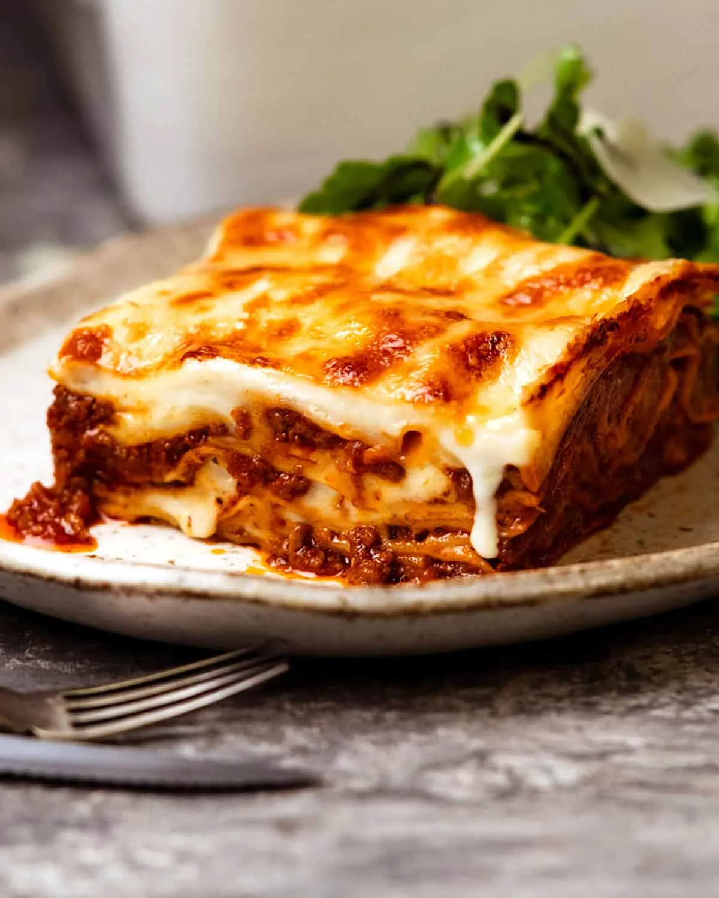

Lasagna Recipe

Description
This is a delicious lasagna recipe that you can make at home.
Ingredients
- 1 pound ground beef
- 1 onion, chopped
- 2 cloves garlic, minced
- 1 can (28 ounces) crushed tomatoes
- 1 can (6 ounces) tomato paste
- 1 can (15 ounces) ricotta cheese
- 2 cups shredded mozzarella cheese
- 1/2 cup grated Parmesan cheese
- 1 egg
- 1 teaspoon dried basil
- 1 teaspoon dried oregano
- Salt and pepper to taste
Instructions
- Preheat oven to 375°F (190°C).
- In a large skillet, cook ground beef, onion, and garlic over medium heat until meat is no longer pink; drain excess fat.
- Stir in crushed tomatoes, tomato paste, basil, oregano, salt, and pepper. Simmer for 15 minutes.
- In a separate bowl, combine ricotta cheese, egg, and half of the Parmesan cheese.
- In a 9x13 inch baking dish, spread a layer of meat sauce, followed by a layer of lasagna noodles, then a layer of the ricotta mixture, and a layer of mozzarella cheese. Repeat layers, ending with a layer of meat sauce and remaining mozzarella cheese on top.
- Cover with foil and bake for 25 minutes. Remove foil and bake for an additional 25 minutes, or until cheese is bubbly and golden brown.
- Let lasagna stand for 10 minutes before serving. Enjoy!
Back to Home